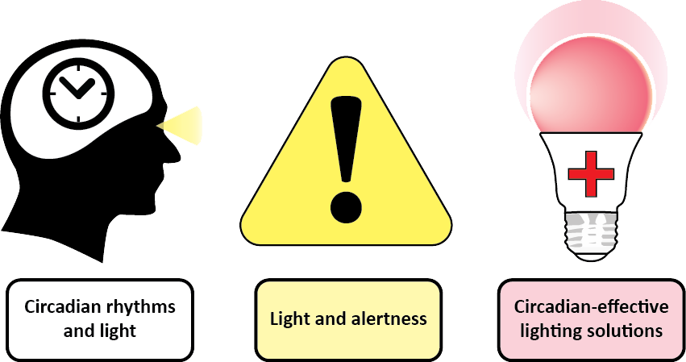
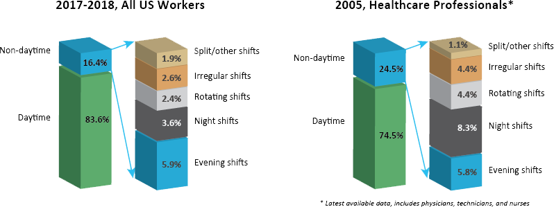
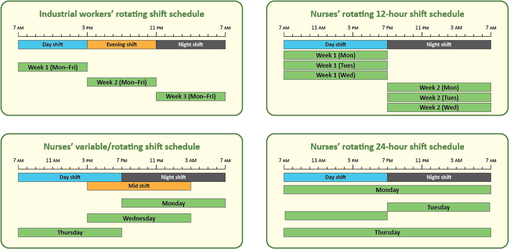
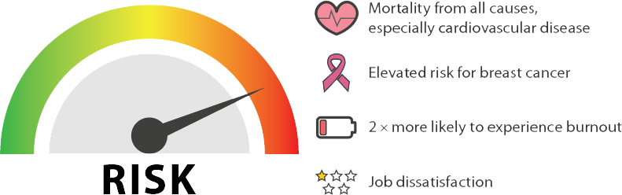
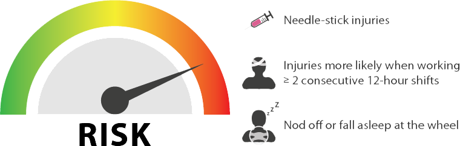
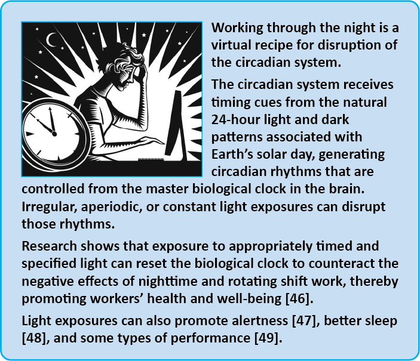

The Lighting Research Center(LRC) at Rensselaer Polytechnic Institute is involved in multi-year research into healthy workplace lighting for promoting alertness, physical and emotional health, and sleep at home. With funding from the National Institute of Occupational Safety and Health (NIOSH), this web resource provides details in three key areas:
Light’s effects on the circadian system.
Occupational risks faced by front-line workers in the 24-hour operational healthcare environment of the healthcare sector.
Lighting solutions for promoting alertness, performance, health, and general well-being among healthcare workers, with a focus on shift-working nurses.
The information presented here will also be of interest to healthcare facility managers and designers, as well anyone interested in promoting healthy outcomes among shift workers generally.

Shift Work and Health Risks
Shift work has been linked to poor sleep, chronic metabolic disorders (e.g., cardiovascular disease, diabetes, and obesity), depression, and elevated risk for the occurrence of accidents, especially when workers’ schedules involve night and early morning shifts (1-5). These conditions can worsen over time with the number of shifts worked per month, and long-term exposure to nighttime shift work has long been associated with increased risks for several forms of cancer (6-8). Research conducted over the last 40 years has found a strong link between health problems and disruption of the human circadian system (9, 10), which regulates all of our bodily functions, essentially telling our body to do the right things at the right times.
In 2007, the World Health Organization’s International Agency for Research on Cancer declared “shift work that involves circadian disruption” to be a probable carcinogen, based on “limited evidence in humans for the carcinogenicity of shift work that involves night work” and “sufficient evidence in experimental animals” that exposure to light during their biological night is carcinogenic (11).

2017-2018 data, United States Bureau of Labor Statistics (2019).
The effects are far-reaching, and extend well beyond the healthcare sector. The most recent (2017–2018) statistics for the U.S. labor force (12, 13) indicate that about 16% (23.7 million) of all full-time wage and salaried employees work evening/swing shifts (typically, 3–11 PM), night shifts (11 PM to 7 AM), rotating shifts (alternating days, evenings, and nights over successive work cycles), or other schedules falling outside conventional daytime work hours (7 AM to 6 PM). About 20–30% of these workers are thought to experience at least some symptoms of circadian disruption, such as excessive daytime sleepiness or insomnia (14). Although more-recent data are not available from the US Bureau of Labor Statistics (15) due to changes in classifications, the proportion of shift-working nurses is probably much higher that of shift worker in other sectors, and research show that many nurses experience sleep problems (see Sleep, accidents, and shift work).

A typical industrial worker’s rotating shift schedule (top left) compared to a typical nurses’ rotating shift schedule (top right). Many nurses work three 12-hour shifts per week, but it is not unheard of for nurses to work day-, night-, and mid-shifts in the same week (bottom left) or even 24-hour shifts (bottom right, assuming a 12-hour minimum between shifts). The green bars represent hours spent working.
The Risks of Healthcare Shift Work
Regardless of shift worked, healthcare work in general carries significant risk for work absences due to illness, stress, and injury, especially among older workers (16, 17).
Healthcare support workers have the highest work absence rates of any occupation (18).
Healthcare practitioners and technicians have the highest work absence rates of any professional occupation (18)
While rates are declining across all US work sectors, OSHA-recordable illness and injuries the rates for hospital workers still remain nearly twice as high as those for all private industry combined (19, 20).
Injuries among healthcare professionals occur at almost three times the rate experienced by other professionals (21).
Shift work is an inescapable fact of life in the 24-hour operating environment of modern hospitals. To ensure continuity of patient care (e.g. efficiency, fewer patient handoffs) and accommodate nurses’ personal preferences (e.g., shorter work week, improved work-life balance) (22, 23), nursing schedules typically follow 12-hour shifts that can include working through the night (see graphic above), when alertness levels are the lowest and the pressure for sleep is the highest (see Sleep, accidents, and shift work). Nursing therefore carries an inherent risk for disruption of the circadian system, and nurses who work night shifts show elevated health and occupational safety risks compared to their colleagues who work days (24-26). It is reasonable to infer that the greater the irregularity of work and sleep, the greater the risk to health.
The research on risks posed to shift-working nurses shows:

Based on a 22-year follow-up on almost 75,000 older (65–66 years old) nurses who took part in the first Nurses’ Health Study (27) beginning in 1976, mortality from all causes (especially cardiovascular disease) increased significantly among those working rotating shifts for 5 years or more compared to their colleagues who never worked nights (25).
A more-recent review of data from over 114,000 participants in the second Nurses’ Health Study II (beginning in 1989) found elevated risk for breast cancer among nurses who had worked rotating shifts for 20 years or more (28), as supported by other studies (29).
Generally, elevated risk for breast cancer is greatest among nurses who work night shifts (8), especially among those who have been exposed to rotating night-shift work at a younger age (28).
Some recent research has cast doubt on claims of an association between working night shifts and breast cancer, however, so continued investigation has been recommended (30-32).
The risks are not limited to physical health. Nurses working longer shifts (i.e., >10 hours) are up to 2.5× more likely to experience burnout (i.e., emotional exhaustion, depersonalization of patients, lack of vitality) and job dissatisfaction compared to nurses working shorter shifts (33). Working shifts longer than 13 hours is associated with decreased well-being, increased job turnover, and greater patient dissatisfaction (33).
Shift Work, Sleep, Accidents
Sleep problems are common in healthcare workers, almost 50% of whom sleep fewer than 7 hours per 24-hour cycle (34), which places them among workers with the highest prevalence of short sleep durations for all occupations (35). Recent research examining shift-working nurses shows that day- and evening-shift nurses experience more regular and consistent rest–activity cycles compared to night-shift nurses (36). Nurses showing greater sleep fragmentation and/or more irregular rest–activity cycles also experienced poorer sleep quality and lower daytime activity levels on workdays.
Poor sleep has consequences for health and emotional well-being. A 2018 long-term study of healthcare shift workers in four U.S. academic hospitals found that participants who reported sleep disorders on a screening questionnaire were almost twice as likely to experience adverse safety outcomes over the following 6 months and increased risk for anxiety or depression by almost two-thirds (37).
Most of the available research examining specific work-related injuries to nurses focuses on needle-stick and musculoskeletal injuries, with a number of those studies associating elevated risk for injury with shift work and night shifts.

A 2007 study linked increased needle-stick injury risk with the amount of time worked per day and month, as well as with working evenings/nights and shifts longer than 13 hours (38).
A 2012 study examining injured worker case files found increased risk for injury when nurses and patient-care associates worked two or more consecutive 12-hour shifts, especially when those shifts involved nights, compared to work shifts that were preceded by time off (39).
A 2015 survey of 1,744 newly licensed registered nurses found that needle-stick injury risk increased 32% for those working overtime and 16% for those working nights (40).
Risks for shift workers do not end in the workplace. Because many nurses are sleep-deprived during their work week, the drive home after their shift can be particularly hazardous. These data are supported by and the most recent (2018–2019) Healthy Nurse Survey conducted by the American Nurses Association, which reports that 14% of nurses either nodded off or fell asleep while driving during the past 30 days (34).
A landmark 1992 study of 635 Massachusetts nurses published in the American Journal of Public Health showed that, compared to those working either day shifts or evening shifts only, rotating-shift workers were twice as likely to fall asleep while driving home and experience near-miss car accidents (41).
Nurses working night shifts are also more likely to have difficulty staying awake while driving home compared to nurses working other shifts (42, 43).
A 2013 study using objective (rest-activity, eye movement) and subjective (questionnaires) assessments of nurses’ drowsiness and their driving performance on a controlled track following an 8–10-hour night shift found that the participants were far more likely to experience a hazardous driving event than on their drive to work before the shift, especially if they had been awake for 16 hours or more (44).
A more recent 2019 Australian study employing similar methods confirmed this relationship between adverse driving events and the drive home after the night shift, finding that sleepiness-related events tended to occur after the first shift and inattention-related events tended to occur after subsequent shifts in the same cycle (45).
The Australian study also found a connection between adverse driving events, the timing of the nurses circadian rhythms, and the time nurses had spent awake (45).
How Light Can Help

Key Points
Night-shift healthcare workers are clearly at higher risk for accidents and health problems associated with circadian disruption.
In the short term, these health problems broadly resemble those associated with jet lag, such as sleep and digestive troubles, fatigue, and mood problems.
Longer term night-shift work has been associated with chronic metabolic diseases (e.g., cardiovascular disease, diabetes, and obesity), various forms of cancer, mood disorders, and elevated risk for accidents both on and off the job.
While further research is needed, there is a present growing urgency to address these problems in innovative ways.
The approach described in this web resource joins a growing body of research into non-pharmacological lighting interventions for treating depression, chronic pain, sleep problems, and even Alzheimer’s disease and related dementias (ADRD). These approaches have shown great promise for improving peoples’ lives without the undesirable side effects of conventional medications.